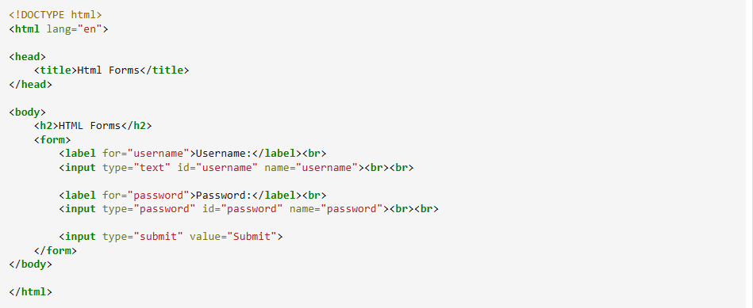

FORMULARIOS
APUNTES
El elemento "form"
El elemento HTML "form" define un formulario que se utiliza para recopilar información que el usuario escribe.
El elemento "input"
El elemento "input" es el más importante en un formulario. Puede ser mostrado de diferentes formas dependiendo del atriputo "type".
Agrupar campos con fieldset.
El elemento fieldset se usa para agrupar datos relacionados en un formulario, y el elemento legend define un título para el elemento fieldset.
Botón de reset
El input type="reset" crea un botón de reset que limpia todos los campos a los valores iniciales.
APUNTES
Sintaxis en HTML:
PARA QUE SIRVEN LOS FORMULARIOS?
Los formularios son comunmente utilizados para, vaya, pedir a los usuarios que llenen un formulario, puede ser para ingresar una tarjeta de crédito para realizar una compra, aunque eso requiere una base de datos, puede ser para solicitar un correo, que ingrese sus datos para conocer la información del usuario, su edad, por ejemplo.
COLOR
REPRESENTAR COLORES EN CSS
Keywords
Podemos agregar color en css poniendo palabras claves en las funciones que nos lo permitan, por ejemplo, color o box-shadow. son bastantes los colores con palabra clave.
Hexadecimal
En las funciones que nos lo permitan, por ejemplo, color o box-shadow, podemos agragar color despúes de un "#" código hexadecimal, podemos poner tres números de dos casillas cada uno en hexadecimal, cada número representa la escala de un color, el primero es rojo, el segundo verde y el tercero es el azul, por ejemplo #00 FF 00 es color verde. #00 00 00 representa el color negro y #FF FF FF el blanco
RGB
Funciona igual que el hexadecimal, pero con diferente sintaxis.
HSL
El hsl también nos pide tres valores, en este caso, hue, saturation y lightness, o sea, tono, saturacion y brillo. la imagen de la derecha es una explicación gráfica de como interactuan esos tres propiedades de la luz.
APUNTES
*Cuando se crea un sitio web, la elección de colores es una tarea delicada, a pesar de parecer
fácil.
*Seleccionar una paleta de colores correcta es importante para comunicar eficazmente el mensaje.
*Todos sabemos que los colores producen sensaciones que la mente humana interpreta.
Paletas de colores
Aunque no hay reglas absolutas, tener en cuenta algunas pautas pueden ayudarnos a encontrar un
diseño armónico.
*colores de la misma gam cromática
*Colores complementarios
*Colores opuestos.
COMENTARIOS
En escencia, se pueden hacer aberraciones con el color, pero no solo es importante que la paleta se vea bonita o interesante, la selección dependerá de lo que se busca transmitir con el proyecto, si es algo serio, infantil, una tienda, una página escolar, etc. Los colores están asociados a determinadas sensaciones, por ejemplo, si la página es para un consultorio, no utilizariamos el colores muy oscuros, utilizariamos blanco con azules, pero esas asociaciones tienen un fundamento cultural, pueden tener significados diferentes según la cultura.
ESPECIFICIDAD CSS
APUNTES
La especificidad es el medio por el cual los navegadores deciden que valores de propiedad CSS son los más relevantes para un elemento y, por lo tanto, se aplicarán.
Cómo se calcula la especificidad?
*La especificidad solo se aplica cuando el mismo elemento es el objetivo de varias declaraciones.
según las reglas de CSS, los elementos dirigidos directamente siempre tendrán prioridad sobre
las reglas que un elemento hereda de su antepasado.
*Cuando varias declaraciones tienen la misma especificidad, la última declaración encontrada en
CSS se aplicará al elemento.
Jerarquia de especificidad
*Cada selector tiene su lugar en la jerarquia de especificidad.
1_. Estilos inline:
Estilos en linea: un estilo en linea se adjunta directamente al elemento que se va a diseñar.
2_. Id's:
Un ID es un identificador único para los elementos de la página.
3_. Clases, atributos y pseudo-elementos:
Esta categoría incluye, clases, atributos y pseudoclases como: hover: focus, etc.
4_. Elementos y pseudo-elementos:
Esta categoría incluye nombres de elementos y pseudoelementos como h1, div: before y :after.
REGLAS DE ESPECIFICIDAD
Igual especificidad
La última regla cuenta: si la misma regla se escribe dos veces en la hoja de estilo externa, entonces la regla inferior en la hoja de estilo está más cerca del elemento que se va a diseñar y, por lo tanto, se aplicará.
Selector universal
El selector universal y los valores heredados tienen una especificidad de 0.
Important
Cuando se usa "!important" en una declaración de estilo, esta declaración anula cualquier otra declaración.
COMENTARIOS
El uso de la regla "!important" es una mala práctica, solo se debe utilizar cuando algo debe ser arreglado de manera inmediata, pero aun así se debe corregir despúes
TABLAS
APUNTES
Las tablas HTML nos permiten organizar los datos en filas y columnas.
Una tabla en HTML consta de celdas de tabla dentro de filas y columnas.
Antes de la creación de CSS, los elementos HTML "table" eran frecuentemente utilizados para la
disposición de una página. Este uso ha sido desalentado desde HTML4, y el elemento no debe ser
usado para dichos fines.
Qué es una tabla?
Una tabla es un conjuto estructurado de datos distribuidos en filas y columnas.
Una tabla permite buscar con rapidez y facilidad valores entre diferentes tipos de datos que
indiquen algún tipo de conexión.
Por ejemplo, una persona y su edad, o un día de la semana o el horario de una piscina municipal.
Elementos de la tabla
*"head" - Encabezado de la tabla
*"th" - Celda del encabezado de la tabla
*"tbody" - Cuerpo de la tabla
*"tr" - Renglón de la tabla
*"td" - Celdas de datos
SINTAXIS EN HTML
RAWSPAN Y COLSPAN
Rawspan indica el número de filas que ocupará la celda. Por defecto ocupa una sola fila. Colspan, indica el número de columnas que ocupará la celda. Por defecto ocupa una sola columna.
HEADER
APUNTES
El header.
*El header es una de las partes más importantes en una página web, pues es el elemento que los
usuarios visualizan en primer lugar cuando llegan al proyecto.
*Por lo tanto, la cabecera de la web debe ser ordenada y limpia para que pueda ser visualizada
con un solo vistazo y no de lugar a confusión.
*Debemos tener en cuenta que el header es un espacio genérico que tendrá el mismo diseño en
todas las páginas de un sitio web.
*Lo primero que debes hacer es un listado con los elementos que vas a incluir en el header de tu
web de forma obligatoria, ya sea por motivos de branding, navegación u otros.
Qué elementos incluir en el header?
Logotipo, menú, buscador, datos de contacto, redes sociales, carrito de compras, botones destacados, selector de idioma o país, formulario de suscripción, etc.
APUNTES
Logotipo
En una web no puede faltar el logotipo, sirve como guía visual para el usuario y permite reforzar la image de la marca. El logotipo en una web suele enlazar con la página de inicio.
Nav (menú)
Permite al usuario la navegación entre distintas secciones. Puede ir en el header. Sí el proyecto tiene una gran estructura o muchas categorías, en ese caso se necesitará un doble menú.
COMENTARIOS
Los elementos que pueden formar parte del header, van a depender de los objetivos y del tipo de web.
FOOTER
APUNTES
El footer.
*El footer o pie de página es una sección olvidada en muchos proyectos web, pero si es bien
diseñado, puede ser muy útil y efectivo.
*El footer es un espacio genérico que suele tener el mismo diseño en todas las páginas de un
sitio web.
*Planificar cada uno de los elementos que se van a incluir en el footer es parte del proceso de
diseño de un proyecto web.
*Así se establecen los elementos que se van a mostrar en función de los objetivos y de la
estrategía de marketing.
Textos legales
Los textos legales son los elementos obligatorios en el footer de toda web y no hay lugar para interpretaciones. La privacidad de los usuarios que visitan la web es un tema muy serio y además es obligatoria.
Redes sociales
Las redes sociales son otro de los elementos que es recomendable colocar en el footer. Permiten una vía de contacto directa entre la marca y las visitas de la web que se pueden convertir en seguidores.
APUNTES
Datos de contacto
Los datos de contacto son una información muy útil para que las visitas se pongan en contacto con
la empresa o negocio.
Se pueden incluir datos como teléfono, email, dirección e incluso se puede mostrar un mapa de
Google Maps.
Sellos de confiaza
El sello de confiaza es un distintivo que otorga la Asociación de Internet MX a sitios web que pertenece a empresas, organizaciones, instituciones y personas identificadas y comprometidas con la generación de confianza en líneas.
SITEMAP
Los mapas de sitio son archivos en los que se proporciona información sobre la páginas, los videos y otros archivos del sitio, así como sobre las relaciones que hay entre ellos. Los buscadors de Google leen estos archivos para rastrear los sitios de forma más eficiente.